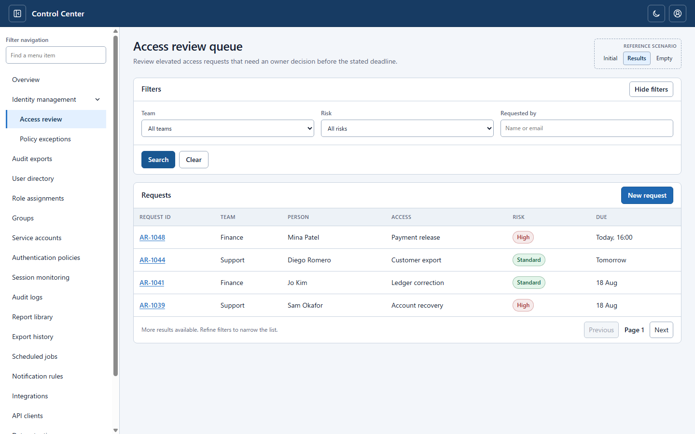

Design knowledge / visual index
Start from a useful example.
Browse UI compositions through separate, state-specific captures. Preserve the intended arrangement and behavior, not incidental pixels or source-code details.
Application shellsImage-first pilotNot an approval registry
Application shells
1 research-selected example

SHELL-001 · Web-origin · Five separate captures
Header-controlled, fully hideable left drawer
A header button opens and closes the left drawer. When closed, the entire navigation disappears—no icon-only rail remains—and the workspace expands into its place.
Explore this shell →
MENU-001 · Web-origin · Five captures
One-level expandable navigation with selected-row accent
Disclosure-only parent and one level of children. Selected leaf rows have a highlighted fill and left accent; the parent never inherits this styling.
Browse menu states →
MENU-002 · Web-origin · Two captures
Header account popover with Escape focus return
Open the user menu from the header; dismiss it with Escape and return keyboard focus to the trigger.
Browse account menu states →
Screen patterns
1 historical example

SCREEN-001 · Web-origin · Three captures
Work queue with filters above results
Three states—initial, populated, and no results—share the same relationship between conditions, actions and outcomes.
Browse screen states →
Use this catalog as an example, not a universal rule. Platform control choices and business content belong to the consuming product. See
curated References for explicitly approved interaction models.